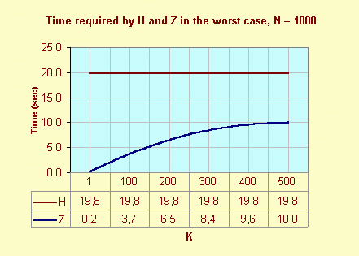
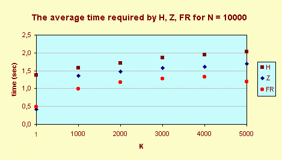
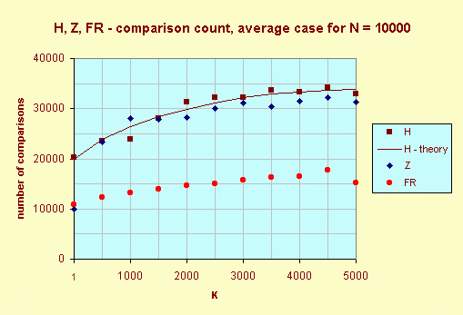
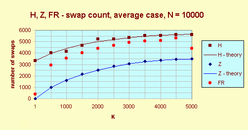

FIND, SELECT, MODIFIND
A comparative study of three selection algorithms, and their implementations in
the Rexx language, for finding Kth smallest of N elements: Hoare's FIND, my
modification of FIND (MODIFIND) and Floyd's and Rivest's SELECT.
The selection problem can be stated as follows (C. A. R. Hoare in [1]): given
an array A of N distinct elements and an integer K, 1 <= K <= N, determine the Kth
smallest element of A and rearrange the array in such a way that this element is placed
in A[K] and all elements
with subscripts lower than K have fewer values and all elements with subscripts greater
than K have greater values. Thus on completion of the program, the following
relationship
will hold:
A[1], A[2], ..., A[K-1] <= A[K] <= A[K+1], ...,
A[N]
The usefulness of a solution of this problem arises from its application to the
problem of
finding the median or other quantiles or finding the minimum or the maximum or
second-largest
elements ... Straightforward solution would be to sort the whole array. But if
the array is
large, the time taken to sort it will also be large.
I'll introduce a faster algorithm due to C. A. R. Hoare.
He called his program FIND (I'll refer to the implementation in this article as
H) and it
selects the Kth smallest element in just O(N) average time.
The H algorithm
Hoare's algorithm is based on the following corollary of the obvious definition:
Definition
Kth smallest element of N elements is a unique element which is greater than K - 1 other elements but less than N - K elements.
Corollary
An element can't be Kth smallest when it is greater than K (and more) elements or less than N - K + 1 (and more) elements.
We begin with a conjecture: A[K] is Kth smallest. The algorithm of the proof or rejection this conjecture is:
The array is divided by scanning from the left (for indexes I = 1, 2, ...) to find an
element A[I] >= A[K],
scanning from the right (for indexes J = N, N - 1, ... ) to find an
element A[J] <= A[K], exchanging them, and continuing
the process until the
pointers I and J cross. This procedure gives three cases:
Case 1 (J < K < I)
Q. E. D.
Kth smallest element is in its final place and
the program finished.
Example:

Case 2 (J < I <= K )
A[1] ... A[J] are less than
N - K + 1 other elements,
exactly they are less than N - I + 1 >= N - K + 1 elements. I. e.
any one can't be Kth smallest, so we'll find (K - I + 1)th smallest
element in the subarray A[I] ... A[N].
Example:

Case 3 (K <= J < I)
A[I] ... A[N] are greater than K other elements,
exactly they are greater than J >= K elements. I. e.
any one can't be Kth smallest, so we'll find Kth smallest element in the
subarray A[1] ... A[J].
Example:

The following program H ilustrates this algorithm. It is the translation
Niklaus
Wirth's program from [6] to the Rexx language.
H: procedure expose A. parse arg N, K L = 1; R = N do while L < R X = A.K; I = L; J = R do until I > J do while A.I < X; I = I + 1; end do while X < A.J; J = J - 1; end if I <= J then do W = A.I; A.I = A.J; A.J = W I = I + 1; J = J - 1 end end if J < K then L = I if K < I then R = J end return
The analysis of the H algorithm
Let us determine the number of comparisons, as A.I < X
is, and swaps
W = A.I; A.I = A.J; A.J = W that H makes.
Let C(N, K) be the number of comparisons made by H when
applied to finding Kth smallest of N elements, and let
S(N, K) be the number of swaps of items.
In worst case:
Cmax(N, 1) =
Cmax(N, N) = (N2
+ 5N - 8) / 2
Cmax(N, K) = (N2 + 5N - 12) / 2,
for K = 2, 3, ..., N - 1
In [3] I showed examples of arrays for worst cases (Kth position is red coloured):
for K = 1: N 2 1 3 ... N-1
for K = 2: 1 N 2 3 ... N-1
for K = 3: 3 2 N 1 4 5 ... N-1
for 3 < K < N-1: 2 ... K-2 K K-1 N 1 K+1 ... N-1
for K = N-1: 2 ... N-1 1 N
for K = N: 2 ... N-2 N N-1 1
In average case (D. E. Knuth in [2]):
C(N, K) = 2((N + 1)HN - (N - K + 3)HN - K + 1 - (K + 2)HK + N + 3)
where:
HN = 1 + 1/2 + ... + 1/N
This yields as special cases:
C(N, 1) = C(N,N) = 2N + o(N)
C(N, median)= 2N(1 + ln2) + o(N) = 3.39N + o(N)
I proved:
S(N,
K) = (1 / 3)((N + 1)HN -
(N - K + 2.5)HN-K+1 - (K + 1.5)HK + N + 2)
Corollary
S(N, 1) = S(N, N) =HN
S(N, median) = (1 / 3)((ln2 + 1)N - 3lnN) = 0.56N + o(N)
The Z algorithm
We consider the array 1, 10, 2, 3, 4, 5, 6, 7, 8, 9,
and K= 2. The array is split into two parts A[1], ..., A[9] and
A[10]: 1, 9, 2, 3, 4, 5, 6, 7, 8 and 10 by the help of one swap and 12
comparisons. But when I find that 10 is greater than two elements (1 and 9)
then I know: it can't be second smallest element. I can reach the same result
(1, 9, 2, 3, 4, 5, 6, 7, 8, 10) by the help of one swap
and three comparisons and I'll search second smallest element in the subarray
A[1], ..., A[9]. This modification of the H
algorithm describes the program Z. It is the translation to the Rexx language
from my article
[3], I called it MODIFIND for Algorithms, Data Structures, and Problems
Terms and Definitions of the
CRC Dictionary of Computer Science, Engineering and
Technology:
Z: procedure expose A. parse arg N, K L = 1; R = N do while L < R X = A.K; I = L; J = R do until J < K | K < I do while A.I < X; I = I + 1; end do while X < A.J; J = J - 1; end W = A.I; A.I = A.J; A.J = W I = I + 1; J = J - 1 end if J < K then L = I if K < I then R = J end return return
The analysis of the Z algorithm
In worst case
Cmax(N, K) =
NK + N + K - K2 - 1, for
K = 1, 2, ..., N
In worst case the number of comparison for the algorithm H doesn't depend on
K.
But for the algorithm Z the number of comparison depends on K. The following
graph shows the time of execution H and Z in worst case.

In average case
In [3] I state only values of C(N, 1), C(N, N)
and S(N, K):
C(N, 1) = C(N, N) = N + HN
S(N, K) = 0.5((N + 1)HN - (N - K)HN-K+1 - (K - 1)HK)
Special cases
S(N, 1) = S(N, N) = lnN + o(N)
S(N, medián) = 0.5(Nln2 + 2lnN) + o(N) = 0.35N + o(N)
The FR algorithm
In their article Expected Time Bounds for Selection[4] R. W. Floyd and R. Rivest presented a new selection algorithm SELECT which is shown to be very efficient on the average, both theoretically and practically. The number of comparisons used to select the Kth smallest of N numbers is N + min(K, N - K) + o(N). I express SELECT in the Rexx language as the FR program.
FR: procedure expose A. parse arg L, R, K do while R > L if R - L > 600 then do N = R - L + 1; I = K - L + 1; Z = LN(N) S = TRUNC(0.5 * EXP(2 * Z / 3)) SD = TRUNC(0.5 * SQRT(Z * S * (N - S)/N) * SIGN(I - N/2)) LL = MAX(L, K - TRUNC(I * S / N) + SD) RR = MIN(R, K + TRUNC((N - I) * S / N) + SD) call FR LL, RR, K end T = A.K; I = L; J = R W = A.L; A.L = A.K; A.K = W if A.R > T then do; W = A.R; A.R = A.L; A.L = W; end do while I < J W = A.I; A.I = A.J; A.J = W I = I + 1; J = J - 1 do while A.I < T; I = I + 1; end do while A.J > T; J = J - 1; end end if A.L = T then do; W = A.L; A.L = A.J; A.J = W; end else do; J = J + 1; W = A.J; A.J = A.R; A.R = W; end if J <= K then L = J + 1 if K <= J then R = J - 1 end return
numeric digits 6 will be sufficient. Hence I used the following simple algorithms from
textbooks:
EXP: procedure parse arg Tr; numeric digits 3; Sr = 1; X = Tr do R = 2 until Tr < 5E-3 Sr = Sr + Tr; Tr = Tr * X / R end return Sr SQRT: procedure parse arg X; numeric digits 3 if X < 0 then return -1 if X=0 then return 0 Y = 1 do until ABS(Yp - Y) <= 5E-3 Yp = Y; Y = (X / Yp + Yp) / 2 end return Y LN: procedure parse arg X; numeric digits 3 M = (X + 1) / (X - 1); Ln = 1 / M do J = 3 by 2 T = 1 / (J * M ** J) if T < 5E-3 then leave Ln = Ln + T end return 2 * Ln
Comparisons of Algorithms
For comparisons I used the program as following one (this example is only
for timing results and for K >= 500):
/* COMPARISON */ N = 10000 do K = 500 to 5000 by 500 TH = 0; TZ = 0; TFR = 0 do Trial = 1 to 100 call RANDARRAY; call INITIALIZE call TIME "R"; call H N, K; TH = TH + TIME("R") call INITIALIZE; call TIME "R"; call Z N, K TZ = TZ + TIME("R"); call INITIALIZE call time "R"; call FR 1, N, K TFR = TFR + TIME("R") end Trial say K TH/100 TZ/100 TFR/100 end K exit RANDARRAY: procedure expose B. N do J = 1 to N; B.J = RANDOM(1, 100000); end return INITIALIZE: procedure expose A. B. N do J = 1 to N; A.J = B.J; end return
The graph Average time required H, Z, FR shows, that Z is faster than FR only for K = 1. I repeated a few times the measuring and always the finding of the median was faster than the finding of the K-th element, for K = 3000 or 4000.

The graph H, Z, FR - comparison count, average case explains previous results. It proves that the Knuth's estimate of the average case for the number of comparison for H holds, too. The Z algorithm is best only for K = 1 otherwise FR is the winner. The theoretical result for FR for the finding of the median holds, i. e. 1.5N comparisons.

The graph H, Z, FR - swap count, average case shows that Z has the least count of swaps. It shows that my estimate for S(N, K) for Z holds as well as.

Conclusion
Algorithms Z and FR are always better than H; FR has fewer the number of comparison than Z; Z has fewer the number of swaps than FR.
Richard Harter's comment in comp.programming
It is interesting. One of the attractive things about the Z algorithm is that
it is simple and easy to code. This is no small thing; quite often one is
trading off coding time versus performance time. In any case it is nice to
know where to find the algorithms on line.
Richard Harter, cri@tiac.net, The Concord Research Institute
What is the difference between Mechanical Engineers and Civil Engineers?
Mechanical Engineers build weapons, Civil Engineers build targets.
Literature
1. C. A. R. HOARE: Proof of a Program: FIND. CACM, Vol 14,
No. 1, January 1971, pp. 39-45.
2. D. E. KNUTH: The Art of Computer
Programming. Sorting and Searching.
Addison-Wesley, Reading, Mass., 1973.
3. V. ZABRODSKY: Variace na klasicke tema.Elektronika (Czech magazine), No. 6,
1992, pp. 33-34.
4. R. W. FLOYD, R. L. RIVEST: Algorithm 489 The Algorithm SELECT - for Finding the
ith
Smallest of n Elements [M1].CACM, March 1975, Vol. 18, No. 3, p. 173
5. R. W. FLOYD, R. L. RIVEST: Expected Time Bounds for Selection.CACM, March 1975,
Vol. 18, No. 3, pp. 165-172.
6. N. WIRTH: Algorithms and data structures. New Jersey 07632, Prentice Hall, Inc.,
Engelwood Cliffs, 1986.
Appendix: About Modifind
I. Correspondence with Paul E. Black
I sent (2
April 1999) to the forum comp.programming and comp.theory the
following subject Three Selection Algorithms:
Hello,
could you read my article FIND, SELECT, MODIFIND, please?
Abstract:
A comparative study of three selection algorithms for finding K-th
smallest of N elements:
Hoare's FIND (the H algorithm);
my modification of FIND (the Z algorithm);
Floyd's and Rivest's SELECT (the FR algorithm).
Algorithms Z and FR are always better than H; FR has lesser the
number of comparison than Z; Z has lesser the number of swaps
than FR. When the number of swaps isn't critical then is FR better
than Z - and vice versa.
Paul E. Black wrote me on the 6th April 1999:
Dear Dr. Zabrodsky:
I saw your posting on comp.theory and was impressed with your article
"Three Algorithms for Finding K-th Smallest of N Elements". I
volunteered to be the area editor for Algorithms, Data Structures, and
Problems of the new CRC Dictionary of Computer Science, Engineering
and Technology.
I plan for this site to be an on-line reference for the entire
computer science community.
I am recruiting people to add terms and definitions or check current
definitions. Would you contribute?
Sincerely,
-paul-
--
Paul E. Black
I replied him 12 April 1999:
Dear Dr Black,
I can offer you:
1) A succint definition of the Selection
problem (entries Selection problem, select k-th element
in your dictionary).
Given an array A of N elements and an the positive integer K <= N,
determine the K-th smallest element of A and rearrange the array in
such a way that
A[1], A[2], ..., A[K-1] <= A[K] <= A[K+1], ..., A[N]
The N. Wirth's implementation of the Hoare's algorithm
FIND in Pascal (for the array X of integers).
procedure FIND(K:integer); var I,J,L,R,W,X:integer; begin L:=1; R:=N; while L<R do begin X:=A[K]; I:=L; J:=R; repeat while A[I]<X do I:=I+1; while X<A[J] do J:=J-1; if I<=J then begin W:=A[I]; A[I]:=A[J]; A[J]:=W; I:=I+1; J:=J-1 end until I>J; if J<K then L:=I; if K<I then R:=J end end
procedure MODIFIND(K:integer); var I,J,L,R,W,X:integer; begin L:=1; R:=N; while L<R do begin X:=A[K]; I:=L; J:=R; repeat while A[I]<X do I:=I+1; while X<A[J] do J:=J-1; W:=A[I]; A[I]:=A[J]; A[J]:=W; I:=I+1; J:=J-1 until (J<K) or (K<I); if J<K then L:=I; if K<I then R:=J end end
You can use an arbitrary part of my article "Three Algorithms for Finding K-th Smallest of N Elements" as well as.
Regards
Vladimir Zabrodsky
II. Why MODIFIND? Short History of my Algorithm
I discovered a strange behaviour of the Find algorithm in June 1989. I found the simple modification of the Find algorithm. A first implementation was written in the Rexx language but later I worked only with Pascal's versions. During autumn 1990 I wrote my article Finding K-th Smallest of N Elements. I sent this paper to the Czech computer magazin Bajt. But my paper didn't even printed in winter 1991. I revised, corrected and extended my article and I sent it again with poetic or music title Variation on the classic theme to another Czech computer magazin Elektronika (with permission from Bajt). It was published in No. 6 (June) 1992 on pages 33-34 [5]. But in Bajt, No. 8 1992 on pages 130-131 [6], was published the old version my paper, too! In these papers I called the Hoare's algorithm Find as P1 (the abbreviation from first procedure) and my modification as P2 (I resisted temptation named it QUICKFIND). In my notes (three notebooks A4 every with 40 sheets of paper) I described my algorithm sometimes as Fnd. In WEB's and Rexx's version I used the name Z (and H and FR). But for Dr. Black's dictionary I think Z it isn't a lifelike name for selection algorithm - I wrote MODIFIND in my mail ...
III. Notes on Proof of S(N, K)
The number of swaps made by MODIFIND in average case is:
S(N, K) = 0.5((N + 1)HN - (N - K)HN-K+1 - (K - 1)HK)
To do the average-case analysis I used exercises 5.2.22 and following from the D. E. Knuth's book [7]. Is it the same method as for Find? Yes, it is. My explanation follows. See on this example.

In the first step Find pushs aside left all elements lesser or equal
4 (i.e. four elements) and it will find in the second step 3rd
smallest element in the subarray 9, 8, 7, 5, 6.
MODIFIND stops work with the number 4, when it know that 4 can't
be 7th smallest element. It will find 5th smallest element in the
subarray 8, 9, 1, 2, 7, 5, 6. But the swaps the numbers 1 and 2 are
unnecessary! This numbers don't change your position during execution
of the MODIFIND algorithm. We can suppose (for the average-case
analysis, counting swaps) that MODIFIND finds in the second step
3rd smallest element in the subarray 8, 9, 7, 5, 6.
The average number of swaps that will have been made in the
first step is:
((K - 1) (N - K) / 2N) + (N - 1) / N
We thus obtain the reccurence relation for the average number of
swaps in the complete MODIFIND (inspiration from D. E. Knuth):

IV. Succint definition of selection problem
C. A. R. Hoare wrote in [1]:
The purpose of the program Find is to find that element of an array A[1:N] whose value is fth in order of magnitude;
and to rearrange the array in such a way that this element is placed in A[f]; and furthermore, all elements with subscribts
lower than f have lesser values, and all elements with subscripts greater than f have greater values. Thus on completion of
the program, the following relationship will hold:
A[1], A[2], ... , A[f - 1] <= A[f] <= A[f + 1], ... , A[N]
In [2] R. W. Floyd and R. L. Rivest wrote: The selection problem
can be succinctly stated as follows: given a set X of n distinct
numbers and an integer i, 1 <= i <= n, determine the ith smallest
element of X with as few comparisons as possible. The ith smallest
element, denoted by i o X, is that element which is larger than
exactly i - 1 other elements, so that 1 o X is the smallest, and
n o X the largest, element in X.
In [3] R. W. Floyd and R. L. Rivest wrote: SELECT will rearrange the
values of array segment X[L : R] so that X[K] (for some given K; L
<= K <= R) will contain the (K - L + 1)-th smallest value,
L <= I <= K will imply X[I] <= X[K], and K <= I <= R will imply X[I]
>= X[K].
In [4] we can read: The input to our selection routine will be the
positive integer N, the array X[1 .. N], and the positive integer
K <= N. The program must permute the array so that X[1 .. K - 1]
<= X[K] <= X[K + 1 .. N]. At that point, the Kth-smallest element
in the set resides in its proper position, X[K].
This my article FIND, SELECT, MODIFIND includes the definition:
The selection problem can be stated as follows (C. A. R. Hoare in
[1]): given an array A of N distinct elements and an integer
K, 1 <= K <= N, determine the Kth smallest element of A and
rearrange the array in such a way that this element is placed in
A[K] and all elements with subscripts lower than K have lesser
values and all elements with subscripts greater than K have
greater values. Thus on completion of the program, the following
relationship will hold:
A[1], A[2], ..., A[K - 1] <= A[K] <= A[K + 1], ..., A[N]
My succint definition of selection problem:
I send to Dr. Black following definition:
Given an array A of N elements and an the positive integer K <= N,
determine the K-th smallest element of A and rearrange the array in
such a way that
A[1], A[2], ..., A[K - 1] <= A[K] <= A[K + 1], ..., A[N]
In this definition Dr. Black in New CRC Dictionary of Computer Science (Algorithms, Data Structures, and Problems) (term select and partition problem) mistaked the word rearrange with the word partition:
The dictionary says:
select and partition
(classic problem)
Definition:
Given an array A of n elements and a positive integer
k <= n, find the kth smallest
element of A and partition the array such that A[1], ..., A[k-1]
<= A[k] <= A[k+1], ..., A[n].
Literature
1. C. A. R. HOARE: Proof of a Program: FIND
CACM, Vol 14,
No. 1, January 1971, pp. 39-45
2. R. W. FLOYD, R. L. RIVEST: Expected Time Bounds for Selection. CACM, March 1975, Vol. 18, No. 3, pp. 165-172
3. R. W. FLOYD, R. L. RIVEST: Algorithm 489 The Algorithm SELECT - for Finding the i-th
Smallest of n Elements [M1] CACM, March 1975, Vol. 18, No. 3, p. 173
4. J. BENTLEY: Selection (in Programming Pearls), CACM, November 1985, Vol. 28, No. 11, pp. 1121-1127
5. V. ZABRODSKY: Variace na klasicke tema, Elektronika, No. 6 1992, p. 33-34
6. V. ZABRODSKY: Nalezeni k-teho nejmensiho prvku, Bajt, No. 8 1992, p. 130-131
7. D. E. KNUTH: The Art of Computer Programming. Sorting and Searching, Addison-Wesley, Reading, Mass., 1973
last modified 15th August 2021 Copyright © 1998-2021 Vladimír Zábrodský, Blansko, Czech Republic
zabrodsky(DOT)v(AT)seznam(DOT)cz